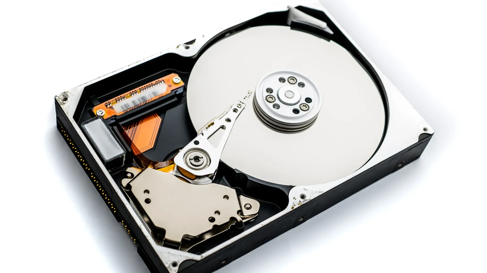

O que é um HD?
O HD (Disco Rígido) é o dispositivo de armazenamento que guarda dados permanentemente, como o sistema operacional, programas e arquivos pessoais. Embora os SSDs estejam se tornando mais populares, o HD ainda é uma opção acessível e confiável para grandes capacidades.
Características principais
- Capacidade: De 500GB a 18TB+
- Velocidade de rotação: 5400 a 7200 RPM
- Interface: SATA é a mais comum em desktops
- Cache: 16MB a 256MB para acelerar leituras
Quando escolher um HD?
Ideal para armazenamento em massa de fotos, vídeos e backups. Para o sistema operacional e jogos, prefira SSDs pelo ganho de desempenho.